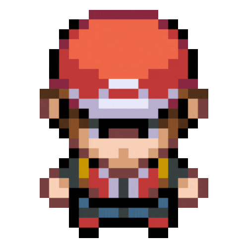

Pokemon é uma franquia enorme, e por causa disso existem inúmeros jogos e os ditos "spin-offs". Vamos
abordar um pouco deles aqui!
Jogos principais

Pokemon acaba sendo uma franquia enorme, mas seu foco sempre foi nos
seus jogos que levam otitulo da franquia, seguindo com um subtitulo a respeito do jogo.
Todos eles tem a sua temática principal de batalhas e ginásios,
mas cada um tem sua própria história sendo contada ao decorrer da franquia